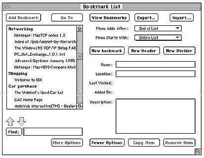
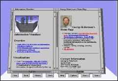
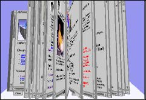
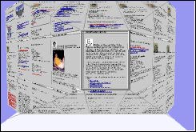
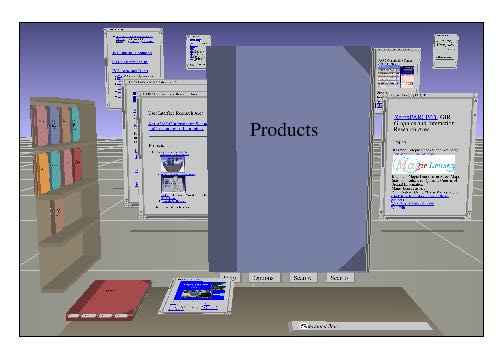
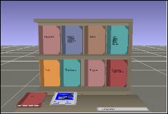
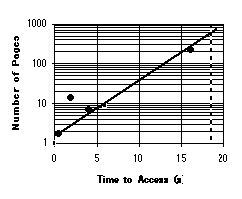

<HTML><HEAD>
<TITLE>The WebBook and the Web Forager:
An Information Workspace for the World-Wide Web</TITLE>
</HEAD>
<BODY>
<TABLE WIDTH="100%" >
<TR>
<TD valign="top"><A HREF="../../index.htm"></A><BR><A HREF="../../indexes.htm"></A><BR><A HREF="../../acmcopy.htm"></A>
<P><A HREF="./../../papers.htm"></A>
</TD>
</TR>
</TABLE>
<HR width="100%">

<H1>The WebBook and the Web Forager:
An Information Workspace for the World-Wide Web</H1>
	<B>Stuart K. Card, George G. Robertson, and William York</B><P>
	Xerox Palo Alto Research Center
	3333 Coyote Hill Road
	Palo Alto, California 94304<BR>
	E-mail:  {card | robertson | york}@parc.xerox.com<P>
		
		
<H3>ABSTRACT</H3>

The World-Wide Web has achieved global connectivity stimulating the transition of computers from knowledge processors to knowledge sources.  But the Web and its client software are seriously deficient for supporting users' interactive use of this information.  This paper presents two related designs with which to evolve the Web and its clients.  The first is the WebBook, a 3D interactive book of HTML pages.  The WebBook allows rapid interaction with objects at a higher level of aggregation than pages.  The second is the Web Forager, an application that embeds the WebBook and other objects in a hierarchical 3D workspace.  Both designs are intended as exercises to play off against analytical studies of information workspaces.<P>
<H4>Keywords</H4>
3D graphics, user interfaces, information access, World-Wide Web, information workspace, workspace.<P>

<H3>INTRODUCTION</H3>

Whereas personal computers used to be viewed as knowledge processors—word processors or spreadsheet calculators, for instance, they are now becoming viewed as knowledge sources—portals to vast stores of information on-line or on CD-ROMs [1].  This is true because much work has become knowledge work and because the infrastructure for distributed knowledge access has been developing.  The most dramatic development of this infrastructure has been the growth of the World Wide Web in the last couple of years.  Uniform access protocols have enabled a person with a personal computer and a communications link access by button-click to millions of pages around the world.<P>
Despite the exhilaration felt by many users at this achievement of wide-scale connectivity, there are problems that call for evolution of the medium:  Pages are often hard to find, users get lost and have difficulty relocating previously-found pages, they have difficulty organizing things once found, difficulty doing knowledge processing on the found thing, and interacting with the Web is notoriously too slow to incorporate it gracefully into human activity.  In this paper, we suggest a way of viewing the Web and its problems, then propose two related innovations, the WebBook[TM] and the Web Forager[TM], to mitigate these problems.<P>

<H3>INFORMATION FORAGING ON THE WEB</H3>

In an information-rich world, the limiting quantity for users isn’t so much the information in the world as the user’s own limited time.  Just as animals forage for food and try to optimize their food rate of gain, users often seek strategies to optimize their information gain per unit time and in fact, we can make the analogy literal by thinking of the Web in terms of Information Foraging Theory [1], an analogue of foraging models from ecological biology [2]. <P>
In terms of this theory, the user stalks certain types of information.  In a particular environment, this sort of information is encountered at a certain rate of l relevant pages/hour, say.  The Web is an evolving information ecology in which on the one hand users are trying to evolve methods to increase the encounter rates of relevant information and on the other hand information sources are trying to evolve their attractiveness to users.  These result in a clumpy structure of patches of high l.  Three mechanisms in particular have evolved on the server side: First, indexes, such as Lycos [3] attempt to visit and form an inverted index of every page by following all the links.  The user can formulate a keyword query and obtain a patch of possible links to forage.  Creation of such a patch is a form of information enrichment.  <P>
A second sort of information enrichment is a table of contents lists such as Yahoo [4]These systems provide typically a tree of categories with links of Web pages at their leaves.  Again, this technique provides enriched patches for foraging.  A third sort of enrichment are the home pages provided by many users, which collect together lists of related links.  Again, these often provide patches with higher encounter rates.  All three responses represent evolutionary adaptation (Lycos and Yahoo are successful enough that they have now been converted to businesses) and emergent self-organizing structure on the Web.  Yet these innovations do not address the basic cost-structure problem of users using Web information as part of some activity.<P>

<H3>THE COST STRUCTURE OF INFORMATION WORKSPACES</H3>

The Web maintains a uniform cost structure.  The time per interaction is fast, compared to the time to, say, go to the library, but it is slow compared to interaction rates, say the time to interact with pieces of paper on a desk.  Empirically, users tend to interact repeatedly with small clusters of information, a property known as locality of reference [5, 6].  As a result, information workspaces, that is, environments that are cost-tuned for doing information-based work, tend to exhibit a certain cost-structure of information:  a small amount of information is organized to be available at very low cost, larger amounts are available at moderate costs, large amounts at high cost.  By so doing, they capitalize on locality of reference and the activity is speeded considerably.  A routine example would be a typical (ideal) office where a small amount of information is kept available on the desk; moderate amounts of information, moderately available in nearby files; and large amounts, slowly available are kept in a library down the hall.   Users constantly rearrange their environments to tune the relative costs of the information, so as to make them efficient.  And if they don’t, they suffer accordingly.  An important activity they do in such environments is to use them for sensemaking [7], that is, the restructuring, recoding, and analysis of information for purposes of insight.  <P>
But the Web does not exhibit the characteristics of a good information workspace.  Users do not have the ability to create adequately tuned environments nor is sensemaking supported.  The major effort to allow users to organize their workspaces has been the development of variants of the &quot;hotlist&quot; notion.  Fig. 1 show a typical example from Netscape 1.1N.  User actions are provided for adding or deleting an element to a hot list, arranging an element under a heading, changing it’s position in the list, or searching for it.  Because of the interface, these mechanisms are very slow to use and do not work well with more than a couple dozen entries.  Even when the entry is found, the user must still wait for the slow access times before the page appears.  Hence the space is not tunable to a reasonably cost-structured workspace.  Multiple windows can be spawned for access to multiple pages, but these then slow the user down because they overlap.  Finally, sensemaking is impeded.  In the conventional Web browsers, users are always at a particular page.  But the way a user works with information is to have multiple pages simultaneously available that can be juxtaposed, rapidly accessed, and structured, such as by grouping or other layout.<P>

<CENTER>
<P>
Fig. 1.   Hotlist browser from Netscape.</CENTER><P>

In order to make the use of the Web better able to support information work (or for that matter, entertainment), we propose in this paper two basic moves:  <P>
<UL><LI>	First, a move from the single Web page as the unit of interaction to a higher, aggregate entity. </UL> 
We call this entity a WebBook, and it allows the user to group together related Web pages (an elementary form of sensemaking) and to manipulate these pages as a unit.  <P>
<UL><LI>	Second, a move from a work environment containing a single element to a workspace in which the page is contained with multiple other entities, including WebBooks. </UL> 
We call this environment the Web Forager.  This information workspace allows for the intensive, rapid interaction among pages and allows for the assembly on the user side of hierarchical cost-structures of information necessary for the task tuning of the workspace.<P>
Each of these has been implemented on a Silicon Graphics Iris computer using the Information Visualizer system [8].  Efforts are underway to reimplement them on a PC and to continue advancing the design.<P>

<CENTER><P>
Fig. 2: Example of a WebBook <P></CENTER>

<H3>The WebBook</H3>

Current Web servers and browsers focus attention at the link and page levels.  These levels are too low to represent gracefully some higher-level structures, resulting in many more entities in the Web space than are necessary and hence to orientation and sensemaking problems.  We know from analysis of the web that there are structures that the user could take advantage of if the user were aware of their existence.  For example, a typical home page on the web has a collection of related pages that can be reached with relative URLs (Uniform Resource Locators).  It is very typical for the creator of such pages to use relative URLs instead of absolute URLs, so that the collection of pages can be physically moved easily.  But current web browsers pay no attention to the distinction between relative and absolute URLs, and the user simply sees one page at a time, with no difference between a page &quot;in the collection&quot; and one outside the collection.  Our proposal is to create a Web entity at a higher level of abstraction, a WebBook.  A natural candidate structure to represent this abstraction is the book metaphor, which has been used by us [9] as well as others [10-18] previously.  <P>
Fig. 2 shows a picture of a WebBook.  Given a collection of web pages, it preloads those pages and displays them as a collection using an augmented simulation of a physical book.  3D graphics and interactive animation are used to give the user a clear indication of the relationship between the pages of the book.  Each page of the WebBook is a page from the web.  Links are color coded so the user can easily tell the difference between a reference to another page in the book (red links) and a reference outside the book (blue links).  Picking a red link will animate the flipping of pages to the desired page. Picking a blue link will close the current WebBook and look for the page elsewhere.  If the page is in another WebBook stored on a bookshelf, that WebBook is opened to the desired page.  If the page is in none of the WebBooks, then the Web Forager is used to display the individual page in the user's information workspace.<P>
There are a number of features in the WebBook that make it intuitive to use.  The user has several ways to flip through the pages of the book, all animated so the user can continue to see the text and images on pages while they turn.  The simplest method is to click on a page (away from any link on that page); this will flip to the next or previous page depending on whether user clicked on the right or left page.  The user can also click on the right or left edge of the book.  The relative distance along that edge indicates how far to flip.  The user can also scan the book with forward and backward scan controls (two of the buttons on the bottom of the book).  The scan rate and pause time at each page is a user preference.  When the user clicks on a page during a scan, the scan stops.  Finally, the user can ruffle through the pages (Fig. 3) by clicking and holding the mouse button down.  The ability to rapidly riffle through a set of pages has previously been a method of rapid scanning for information that could only be done with physical books. <P>

<CENTER>
<A HREF="skc1fg3.mpg">
</A><P>
Fig. 3. Example of ruffling pages in a WebBook <BR>
(Click on picture to see pages move)<BR>
[418K MPEG.  Should play in 2 sec.]<BR>
For QuickTime version (1.2M) <A HREF="skc1fg3.mov">click here</A></CENTER><P>


In addition, the user can leave a bookmark on any page.  When the book is closed, a bookmark is automatically left for the last page that was viewed.  Also, there is a &quot;Back&quot; and &quot;History&quot; mechanism that follows the same convention as NetScape's versions of those commands.  The WebBook can be stored on a bookshelf using a simple gesture.  When it is removed from the bookshelf (by clicking on it), it reopens to the last page that was being viewed.<P>
Each page in the WebBook has three scrollbars.  Two of these are the familiar vertical and horizontal scrolling controls (left and bottom scrollbars).  The third (on the right) is for scaling the font size, since the trade-off of font-size vs. amount of page viewed differs for individual pages.  As the scale scrollbar is moved, images remain the same size but the text changes size and is refilled continuously.  A menu command allows the user to apply a new font scale to all pages of the WebBook.  The corners of each page of the WebBook are resize tabs, which the user can use to change the size of the book.<P>
Books are compact but (except for bookmarks) sequential.  Therefore we allow the user to explode the book out (in animation) so that all the pages are available simultaneously.  The Document Lens [19] can then be used to inspect portions of interest.  Fig. 4 shows the WebBook Document Lens view.  The user is then able to pan and zoom over the entire set of pages, while retaining a focus plus context display of the book.  When returning to the book view, the user sees an animation of the pages imploding into a book.<P>

<H4>WebBook Applications</H4>

The WebBook can be used to view any collection of web pages.  The principle difference is the method used to generate the URLs.  The method used to collect URLs leads to a number of applications.<P>
<I>Relative-URL Books.</I>  One interesting choice of pages is based on recursively finding all relative URLs starting from a given page.  These pages are intrinsically related because their creator wanted to be able to move them as a group.  We have found this heuristic often produces coherent and interesting books.
<I>Home-Page Books.</I>  Probably the simplest choice of pages is those pages referred to directly from a given page.  Users throughout the net have strongly expressed their desire to make sense of the net by collecting sets of related URLs.  The WebBook goes the next step and allows the collection of pages to be rapidly consulted without waiting for network delay speeds.<P>

<CENTER>
<P>
Fig. 4. WebBook viewed with a Document Lens.<P></CENTER>

<I>Topic Books.</I>  A variant is to make sets of books on interesting topics.  For example, in our area houses for sale are published on the Web, usually one page per house and usually organized off the home pages of the real-estate brokers.   But we have rearranged these ads into houses from a given city.  It is then possible rapidly to look back an forth in order to make house comparisons. <P>
<I>Hot List Books.</I>  Another variant is hotlist pages.  Our system can read any user's Netscape hotlist and automatically fashion it into a set of WebBooks.  Although exactly the same URLs are involved, the transformation is dramatic because all the information on all the pages is readily available.<P>
<I>Search Reports.</I>  Since WebBooks can be created dynamically, they can be used to display the results of a content based search, either keyword based or relevance feedback (looking for pages similar to a given page).  Later results from the search can still be retrieving pages while the user is examining the first pages of the book.<P>
<I>Book Books.</I>  A final example comes from observing how some people take multi-page documents and put them on the web.  One way to do this is with a series of pages, with next and previous links between pages.  When viewing one of these pages with a traditional web browser, there is no indication of how the pages are related.  But, such a structure can be easily discovered, and a WebBook constructed from those pages, resulting in a collection of obviously related pages.<P>

<H4>Related Work: The Book Metaphor</H4>

The book metaphor has been used in both 2D and 3D applications by a number of people for some time.  What is new about the WebBook is the integration of an animated 3D book, used to show collections of web pages, with an information workspace manager (the Web Forager) and the application to Web problems.<P>
A book metaphor was chosen after careful examination of a large number of web pages and page collections, and for several reasons:  Informally, information on the Web tends to have non-homogeneous character, with closely related weblets situated in more loosely structured environments.  An important subset of these have 'next' and 'previous' links, and thus are thus close operational analogues to books.  Furthermore, books as an invention make very efficient use of display space.  Starting with a book metaphor, it is easy to escape the serial nature of the physical form by having alternate forms into which the book is transformed, such as the Document Lens in this paper.  A book metaphor makes it easy to put actual books on the Internet, something not so at present.  We use the book metaphor not primarily because it is familiar, but because of the operational match to a corpus of interest and the efficient display characterization.  As a bargain, its familiarity allows us to exploit irresistible affordances for low training costs.<P>
Early experiments with giving users access to books, like Brown's Intermedia [10] system in 1985, had limited 3D graphics capabilities.  Instead of a simulation of a physical book, Intermedia used 2D layouts of the pages, showing relationships between pages with the layout and with lines drawn between pages.  In 1987, Card and Henderson reported the use of a 2D book simulation called &quot;Catalogues&quot; as part of the Rooms system [9], although page turning was not animated.  The Xerox TabWorks system [16] was directly inspired by Catalogues.  Also in 1987, the BellCore SuperBook Document Browser [13], was designed to transform existing electronic documents into hypertext documents with indexing and a fisheye table of contents, although SuperBook did not use a simulation of a physical book.<P>
Use of a 2D physical book simulation, including page turning, was done in 1987 by Benest [17] for hypertext documents.  Similar systems were reported by Miyazawa in 1990 [11] and Ichimura in 1993 [18].  Recently, PenPoint [14] and General Magic [15] have offered commercial products that use a book metaphor with bookshelves.  These are actually 2D animations painted on a background that give the impression of a 3D environment.  In 1993, Silicon Graphics introduced the SGI Demo Book [12] as a way of distributing collections of applications, documents, and games.  Demo Book is a 3D book that simulates page flipping with animation.  The pages hold a collection of icons, 4 rows by 5 columns on each page.  The page flipping appears to have flexible pages (broken on the columns).  The WebBook page flip currently uses rigid pages, but is displaying text and images instead of rows and columns of icons.  Demo Book also has the notion of a bookshelf, although the book always opens to the first page rather than the last page viewed.<P>


<CENTER><P>
Fig. 5: The Web Forager.  (See Color Plate 1)</CENTER><P>

In 1995, Brown described an experimental web browser, called DeckScape [20], that used a metaphor of decks of cards.  Although not a book metaphor, it was an alternative way to solve the problem.<P>
All these systems exploit the human perceptual and cognitive systems by using familiar objects, images and affordances.  The page turning of a book conveys information about the relationship of pages, the direction you are moving in the book, the size of the book, and the contents of the book.  The WebBook takes advantage of advances in graphics and processor power to get much closer to a realistic simulation of a book.  At the same time, it goes beyond what is possible with a physical book.<P>

<H3>THE WEB FORAGER</H3>

The WebBook provides a representation of a more aggregate Web entity above the page and allows rapid local interaction with it.  The Web Forager allows interaction with multiples of such entities and allows for the necessary tradeoffs among fast access, number of entities, and screen space.  The Web Forager is a proposal for a task-tunable information workspace [21] (see Fig. 5).  <P>
An individual Web page or a WebBook is presented in a 3D document space (see[22], [23]).  Users can click on links in the usual way causing the new linked-to page to fly into the space.  The HTML image on the new page develops at the slow Internet speeds (often 15~30 sec).  Web pages entered into the space are stored locally and thence forward are available at user interface speeds (around 1~0.1 sec), permitting high interaction rates.  These pages can also be grabbed and placed into WebBooks.  <P>
Our primary interest in this style of workspace is in exploring the potential for rapid interaction with large numbers of pages.  We have previously explored the use of animation, scaling, and 3D-based distortions for building a workspace [21] as a way of handling large numbers of objects.  Ark Interface, Inc. [24] produced a pseudo-3D workspace in which functions were associated with parts of a picture of a design studio.  Staples [23] did a design mockup study for a 3D user interface.  Her goal was to enrich the graphic vocabulary of the workspace by applying perspective, light, and transparency.  Ballay [22] with co-workers at the MAYA Design Group implemented a 3D design for an office system.  Their design is artistically striking and claimed to be able to handle hundreds of documents.  We have sought to break new ground relative to their design on several fronts.  First, we tried to increase the speed with which objects can be moved around the space by using gestures.  Second, we focused on the Web.  Third, the WebBook provides a higher-level object.  Fourth, we have experimented with observer movement in the space.  And Fifth, we have used a structured model for the generation of the design.<P>

<H4>Hierarchical Workspace</H4>

The Web Forager workspace (see Fig. 5) is arranged hierarchically (in terms of interaction rates) into three main levels:  (1) a Focus Place (the large book or page) showing a page, a book, or an open book at full size for direct interaction between user and content; (2) an Immediate Memory space (the air and the desk), where pages or books can be placed when they are in use, but not the immediate focus (like pages on a desk).  A Tertiary Place (the bookcase) where many pages and books can be stored.<P>
The Immediate Storage place has several tiers.  Documents are arranged at several distinct z-distances in the 3D space.  The user can move these documents back in space (the farther back, the smaller they become and the more documents that fit).  Objects in the Immediate Storage place can be moved around in X and Y and moved forward and backward (that is, in Z) using a simple gesture language.  A separate Intermediate Storage area is represented by objects on the desk.  When the user moves around in the space, the desk, and hence objects on the desk, moves.<P>
The Tertiary Storage area is the bookcase.  In normal view, the bookcase is seen at an angle to reduce screen pixels consumed, while at the same time displaying enough information that recently-used books can be recognized.  If the user touches one of the books or pages in the bookcase, it will fly up to the focus area (an object occupying that area will automatically fly back to an Immediate Storage position).  But if the user wants to examine better the books before making a choice, then touching the bookcase will cause the user, desk and all, to fly to the bookcase (Fig. 6).  Touching a book will then cause the user to fly back to the home position and the book to fly to the focus position.<P>

<CENTER>
<P>
Fig. 6: User has flown to the bookcase where the titles of the books can be easily read. <P></CENTER>

  The purpose of the workspace is to allow a number of objects to be displayed together (mitigating the limitations of the small screen space) in order to support information-intensive activities.  The workspace sets up explicitly the capacity for speed/access-time tradeoff to allow tuning for such activities.  The design aims to provide very rapid access to a small number of pages, smoothly integrated with the slower access to a large number.  The Immediate Storage workspace can hold about 30 documents without occlusion, and over a hundred if occlusions are allowed (not counting book contents).  Pages for ongoing activities migrate into the rapid access and manipulation region.  In this way, repeated reference due to locality of reference statistics can result in faster interaction.<P>
<H3>Cost of Knowledge Characteristic Function</H3>
In previous work [25], we have attempted to measure the access properties of a workspace by computing the Cost of Knowledge Characteristic Function, that is, a plot of how many objects can be accessed as a function of the time cost of accessing them.  We surmise that a balanced workspace will exhibit an exponential relationship, most conveniently displayed as a straight line in semi-log coordinates.  As a tool to use in refining our design, we have computed a preliminary version of this function.  The computation assumes that there is a page in the Focus Position (hence the maximal occlusion), that the desk is full, and that one row of pages from each of the discrete Z-distances in the space shows (remember, the design of the space has been carefully set up to permit this).<P>


<CENTER>
<P>
Fig. 7.  Preliminary computation of Cost of Knowledge Characteristic Function for Web Forager.  <P></CENTER>

The results are shown in Fig. 7.  They are roughly in the expected relation, except that the images on the desk permit the fast part of the space to receive extra loading.  An illustrative comparison with a conventional Web browser is shown as a gray line assuming a constant 18 sec per page retrieval.  We hope to use this and related techniques to further refine the space in future research.<P>

<H3>SUMMARY</H3>
The Web Forager workspace is intended to create patches from the Web where a high density of relevant pages can be combined with rapid access.  In addition to multiple pages occurring simultaneously, the space contains groups of pages in the form of WebBooks, which can allow the user to express an elementary form of sensemaking by grouping and ordering.  High density patches found around the net, whether created explicitly by searchers or discovered through Web analysis methods can be put into a form where they can be rapidly interacted with.  Through the invention of such techniques and analytical methods to help us understand them, it is hoped that the connectivity of the Web, which has been so successful, can be evolved into yet more useful forms.<P>

<H3>REFERENCES</H3>

1.	Pirolli, P. and S. Card, Information Foraging in Information Access Environments, in CHI '95, ACM Conference on Human Factors in Software. 1995, ACM: New York. p. 51–58.<P>
2.	Stephens, DEW. and J. R. Krebs, Foraging theory. 1986, Princeton: Princeton University Press. <P>
3.	Mauldin, M.L. and J.R.R. Leavitt. Web-agent related research at the CMT. in SIGNIDR. 1994. McLean, Virginia: <P>
4.	Filo, D. and J. Yang, Yahoo (Yet Another Hierarchical Officious Oracle). 1994, Yahoo! Corp: Stanford, California. <P>
5.	D. A. Henderson, J. and S.K. Card, Rooms: The use of multiple virtual workspaces to reduce space contention in a window-based graphical user interfaces. ACM Transactions on Graphics, 1986. 5(3 (July)): p. 211–241.<P>
6.	Card, S.K., M. Pavel, and J.E. Farrell, Window-based computer dialogues., in Human-Computer Interaction—INTERACT '84, B. Shackel, Editor. 1984, Elsevier Science Publishers, B. V. (North-Holland): Amsterdam. p. 51–56.<P>
7.	Russell, D.M., et al., The cost structure of sensemaking, in ACM/IFIPS InterCHI '3 Conference on Human Factors in Software. 1993, ACM: New York. p. 269–276.<P>
8.	Robertson, G.G., S.K. Card, and J.D. Mackinlay, Information visualization using 3D interactive animation. Communications of the ACM, 1993. 36(4 (April)): p. 57–71.<P>
9.	Card, S.K. and D.A. Henderson, Catalogues:  A Metaphor for Computer Application Delivery, in Human-Computer Interaction -- INTERACT'87. 1987, Elsevier Science Publishers (North Holland): p. 959–963.<P>
10.	Yankelovich, N., N. Meyrowitz, and A. van Dam, Reading and Writing the Electronic Book. IEEE Computer, 1985. 18(10 (October)): p. 15–30.<P>
11.	Miyazawa, M., et al., An Electronic Book: APTBook, in Human-Computer Interaction -- INTERACT'90. 1990, Elsevier Science Publishers (North Holland): Amsterdam. p. 513–519.<P>
12.	Silicon Graphics, Demo Book. 1993, Silicon Graphics: Mountain View, California. <P>
13.	Remde, J.R., L.M. Gomez, and T.K. Landauer, Superbook: An Automatic Tool for Information Exploration, in ACM Hypertext '87 Proceedings. 1987, p. 175–188.<P>
14.	Carr, R. and D. Shafer, The Power of PenPoint. 1992, New York: Addison-Wesley. <P>
15.	Sony Corporation, Magic Link User's Guide, PIC-1000. 1994, Tokyo: Sony Corporation. 203 pp.
16.	Moll-Carrillo, H.J., et al., Articulating a Metaphor Through User-Centered Design, in CHI '95, ACM Conference on Human Factors in Software. 1995, ACM Press: New York. p. 566–572.<P>
17.	Benest, I.D., G. Morgan, and M.D. Smithurst, A Humanized Interface to an Electronic Library, in Human-Computer Interaction -- INTERACT'87. 1987, Elsevier Science Publishers (North Holland): Amsterdam. p. 905–910.<P>
18.	Ichimura, S. and Y., Another Dimension to Hypermedia Access, in Hypertext '93. 1993, ACM: New York. p. 63–72.<P>
19.	Robertson, G.G. and J.D. Mackinlay, The Document Lens. UST '93, ACM Conference on User Interface Software and Technology, 1993. : p. 101–108.<P>
20.	Brown, M.. and R. C. A. Shiner, A New Paradigm for Browsing the Web, in CHI '95, ACM Conference on Human Factors in Software, Conference Companion. 1995, ACM Press: New York. p. 320–321.<P>
21.	Card, S.K., J.D. Mackinlay, and G.G. Robertson. The Information Visualizer:  An information workspace, in CHI '91, ACM Conference on Human Factors in Computing Systems. 1991. <P>
22.	Ballay, J.M. Designing Workscape:  An interdisciplinary experience. in ACM CHI '94, Human Factors in Computing Systems. 1994. Boston: ACM. <P>
23.	Staples, L. Representation in virtual space:  Visual convention in the graphical user interface. in INTERCHI '93. 1993. ACM. <P>
24.	Ark Interface Workspace User's Guide. 1990, Seattle, Washington: Ark Interface, Inc. 54.<P>
25.	Card, S.K., P. Pirolli, and J.D. Mackinlay, The cost of knowledge characteristic function:  Display evaluation for direct-walk dynamic information visualizations, in CHI '94, ACM Conference on Human Factors in Software. 1994, ACM: New York. p. 238–244.<P>

